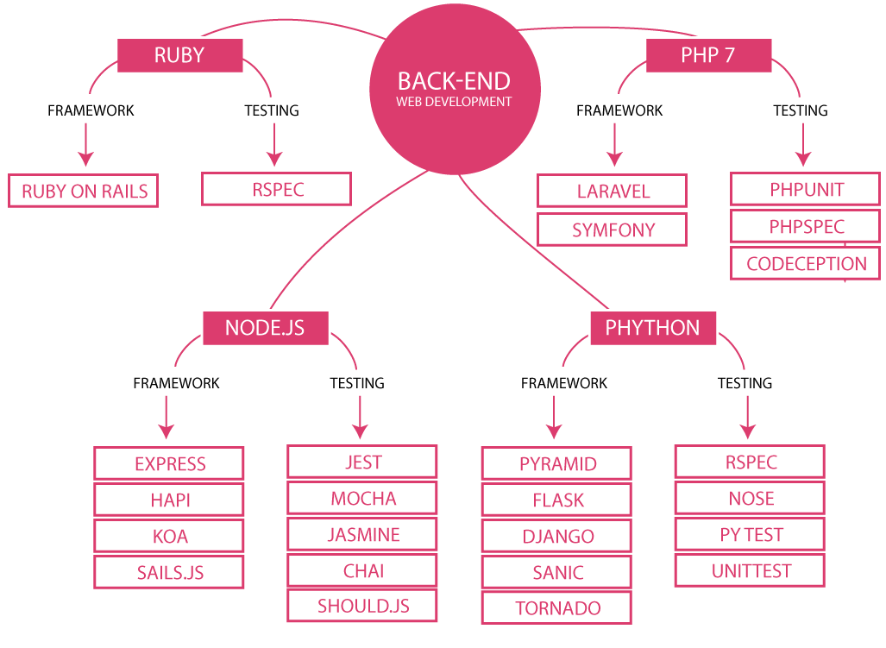

What does Back-end developer do?

This is a developer who specializes in the design, implementation, functional core logic, performance and scalability of a piece of software or system running on machines that are remote from the end-user.
Back-end systems can grow to be very complex, but their complexity is often not visible to the users. For example, consider Google search engine. The front-end part is a very simple UI with a title, a text box, and two or three buttons. The backend is an enormously complex system, able to crawl the web, index it, and find what you are looking for with a growing array of sophisticated mechanisms.
The programming languages needed:
- PHP
- Python
- C#
- Javascript{node.js}
- SQL